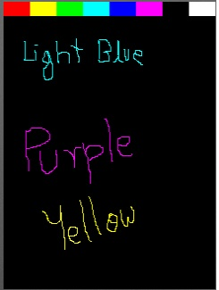

Stylus is a simple drawing program, where you draw with your mouse/stylus.
The code for this example can be found in the example folder of the MoSync SDK, typically c:/MoSync/examples on your local installation.

Installation
Expected Output/Behaviour
The screen is black with a color bar on the top end. Use the pointer to draw, select color by clicking desired color bar.
At the time of this writing, touch support is very limited. In the 2.3 release of MoSync full support can be expected.
Key Presses